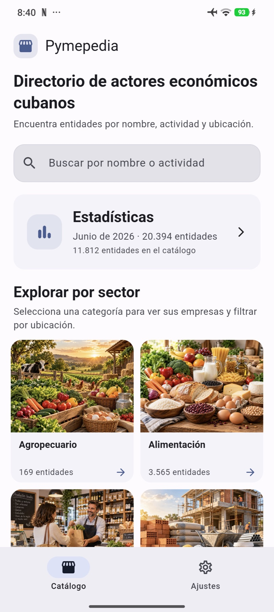

01 / PRODUCCIÓN
Agro y campo
Encuentra actores vinculados a la producción agropecuaria.
Directorio económico de Cuba
Un directorio claro para descubrir MIPYMEs y actores económicos por nombre, actividad y ubicación.
 Alimentación
Alimentación
 Comercio
ComercioUn país de ideas y negocios
Recorre sectores de la economía cubana desde un solo lugar. Empieza por lo que te interesa y sigue descubriendo.
Encuentra actores vinculados a la producción agropecuaria.
Descubre negocios y servicios de alimentación.
Explora entidades y opciones cerca de ti.
Distintas formas de explorar.
Filtra el directorio por sector y ubicación para llegar a la información que necesitas.
Hecha para consultar
Con Pymepedia puedes encontrar entidades, revisar sus datos y guardar las que quieras tener a mano.
Descubre la betaLocaliza entidades por su nombre, actividad o ubicación.
Marca entidades como favoritas y consúltalas cuando quieras.
El catálogo disponible en la app se puede consultar aunque no tengas internet.
Pymepedia · Beta
Conoce la experiencia web o instala OneBlink para solicitar acceso a la beta de Pymepedia desde su Centro de apps.
La beta de Pymepedia se habilita mediante solicitud dentro de OneBlink.